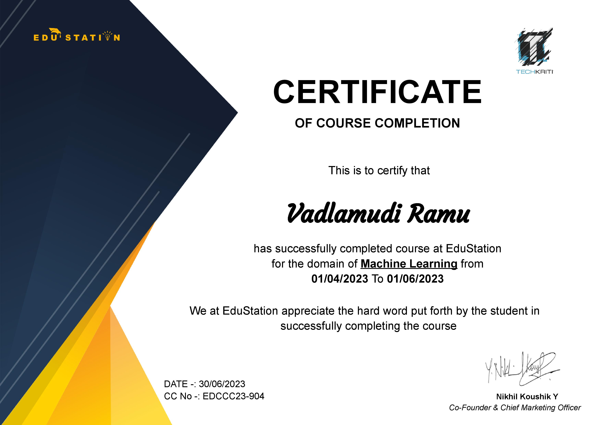
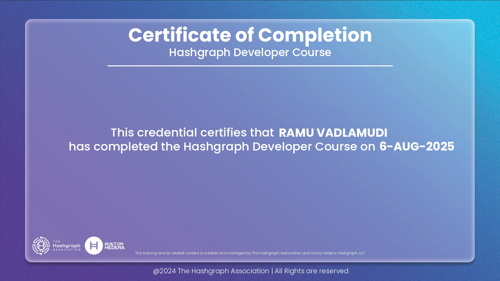
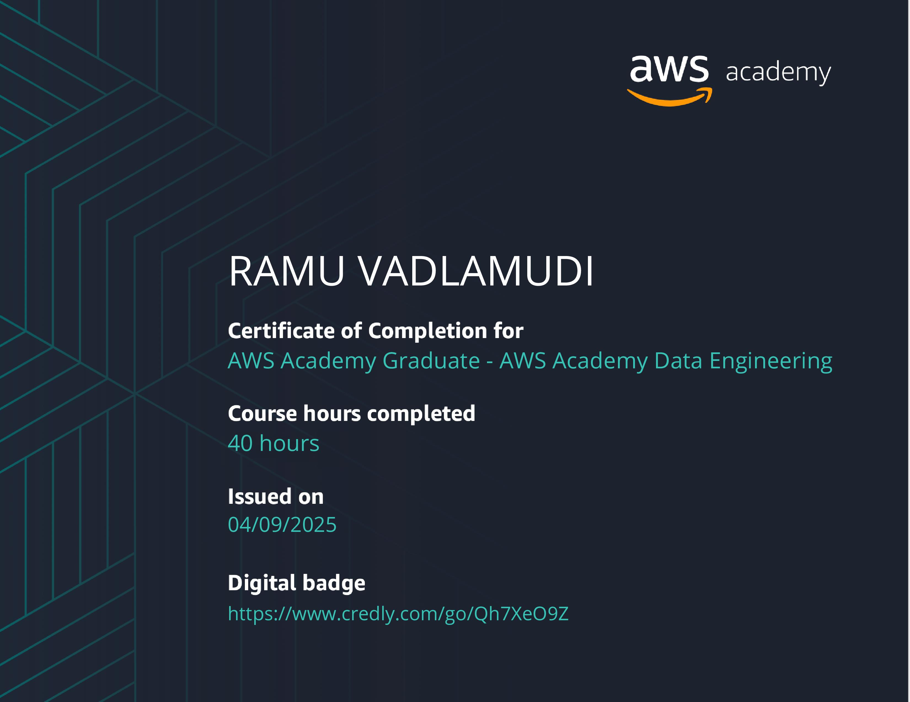
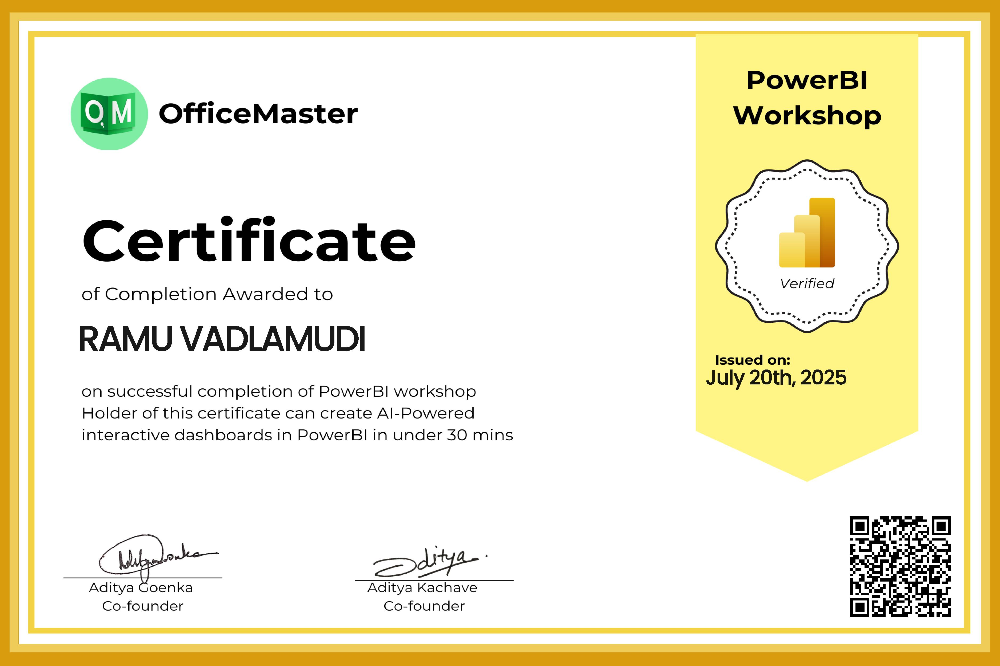
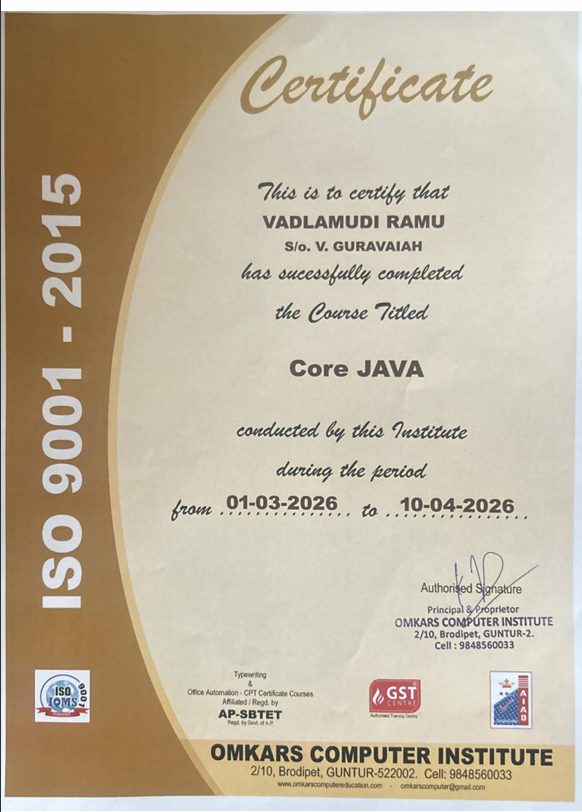

Highly motivated and adaptable Information Technology graduate with strong knowledge of Java, Python, SQL, and Web Development. Hands-on experience in machine learning, software testing, and cloud technologies through academic projects and internships. Passionate about building scalable software solutions and continuously learning emerging technologies.

Global Certification – Machine-Learning

Certified Hashgraph Developer

Workshop – Using AWS Academy Data Engineering for Productivity

Workshop – Working with Power BI for Data Visualization

Course – Core Java
Email: ramuvadlamudi123@gmail.com
Phone: 9701723548
LinkedIn: ramu-vadlamudi
GitHub: ramu2811